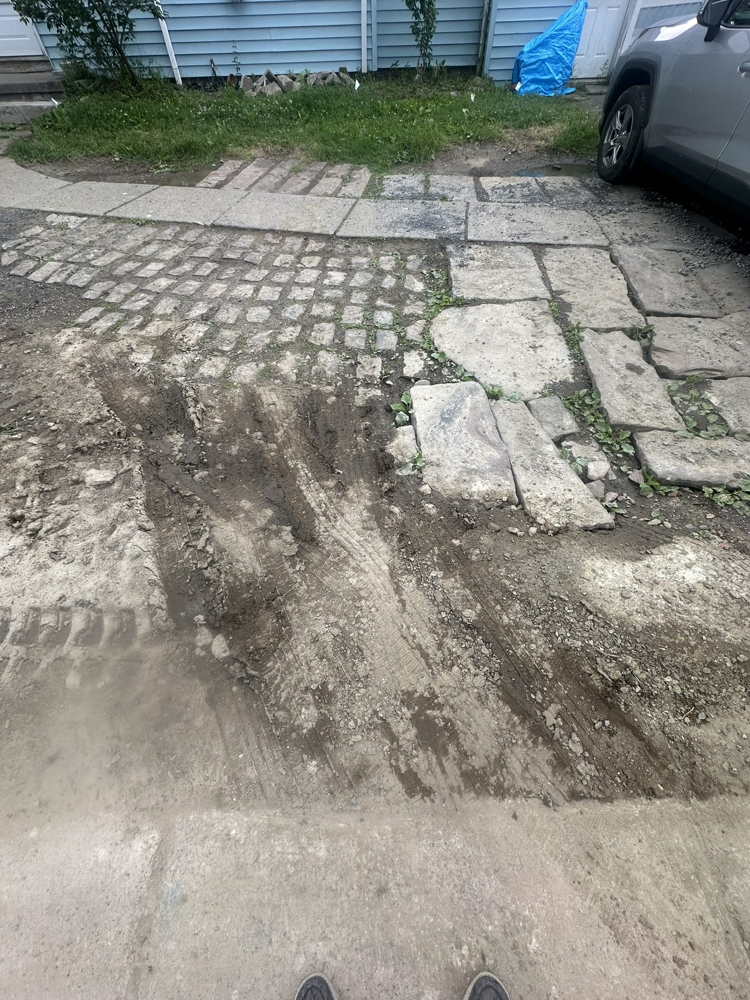
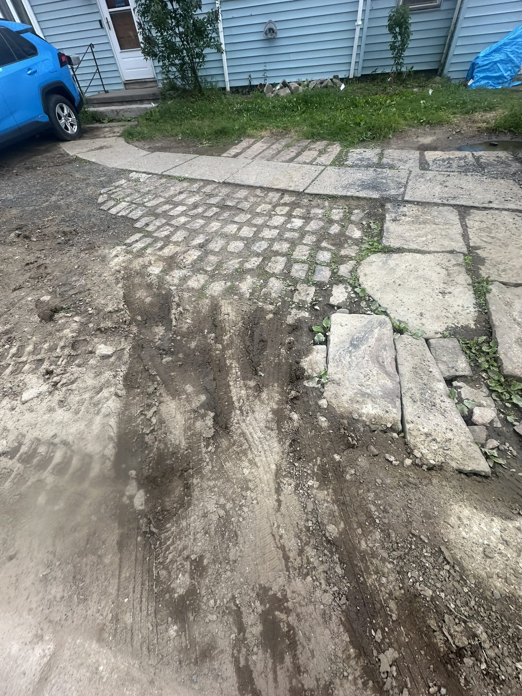
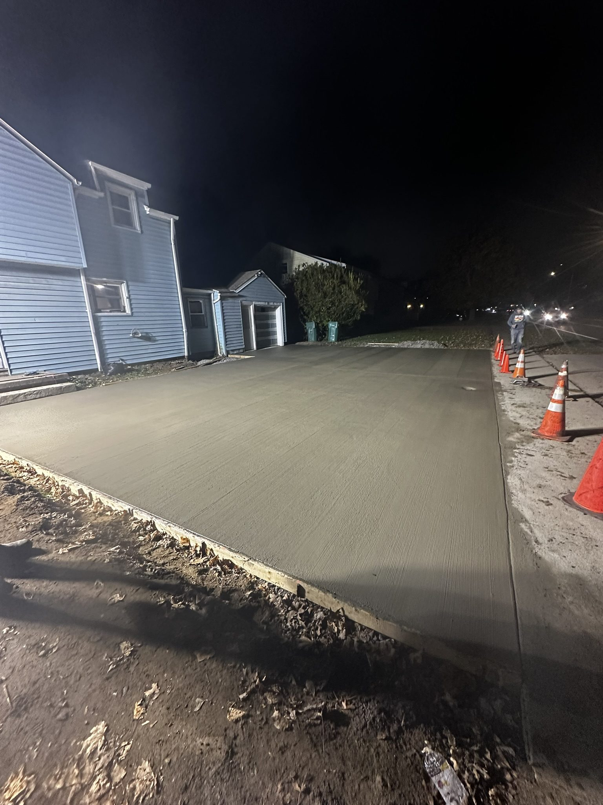

Before
Heaved stone and freeze-thaw damage — before demo

During
Base prepped — wire mesh reinforcement laid before pour

After
Broom-finish concrete — clean finish, expansion joints cut
Project — Monroe County
Failed stone and cobblestone driveway — freeze-thaw heaving had made it a liability. Demolished and removed the existing surface, prepped a proper base with wire mesh reinforcement, and poured new reinforced concrete with expansion joints cut throughout. Before, during, and after photos below.
Before
Heaved stone and freeze-thaw damage — before demo
During
Base prepped — wire mesh reinforcement laid before pour
After
Broom-finish concrete — clean finish, expansion joints cut
Additional photos from the project showing demo, base work, and the finished surface.

Demolition and removal of existing surface

Base preparation

Project progress

Project progress

Concrete work in progress
Concrete work in progress
Finishing
Finishing

Finishing

Nearly complete

Completed surface

Finished detail

Finished driveway
Call Don for a free on-site estimate. He'll come out, look at the job, and give you a straight number.
585-490-1600Free on-site estimates across Rochester, Monroe County, Ontario County, and Wayne County.